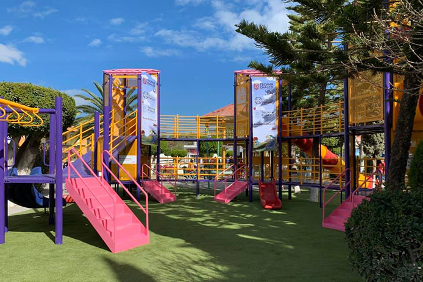
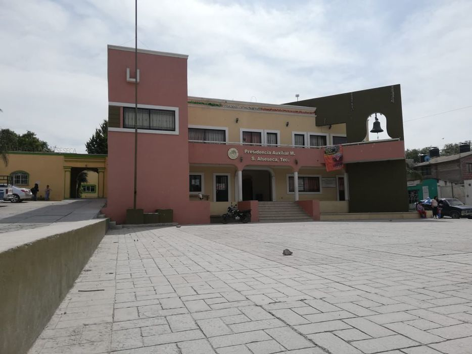

Alseseca es un pueblito bastante bonito que tienes que visitar, cuenta con variada gastronomia que tienes que conocer.
La localidad de Santiago Alseseca está situada en el Municipio de Tecamachalco (en el Estado de Puebla). Hay 9,119 habitantes. En la lista de los pueblos más poblados de todo el municipio, es el número 3 del ránking. Santiago Alseseca está a 2,076 metros de altitud.
Para que puedas disfrutar un poco alrededor de Santiago Alseseca, hemos recopilado una colección de fotografías de paisajes y monumentos de la localidad y cercanos a ella.
|
 |  |